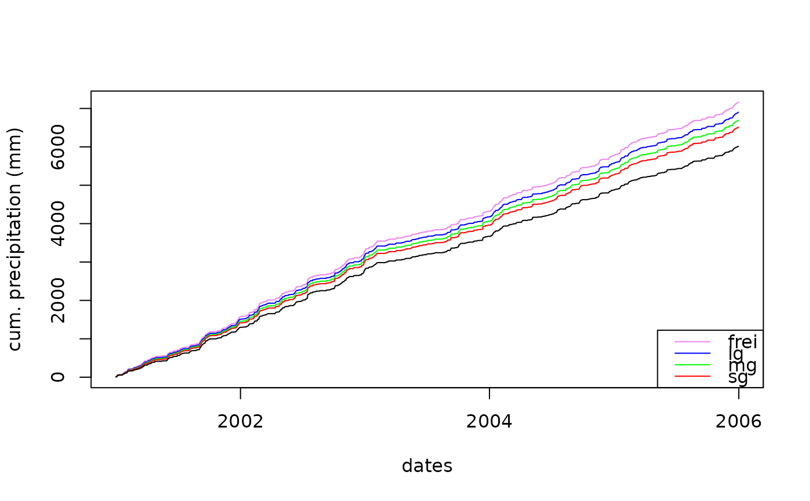

R/richter_prec_corr.R
correct_prec.RdCorrect rain gauge precipitation data for wind and evaporation errors after Richter (1995)
correct_prec(month, tavg, prec, station.exposure = "mg", full_output = FALSE)Vector of months.
Vector of air temperature values (deg C). Same length as
month.
Vector of measured rainfall vales (mm). Same length as
month.
Situation of the weather station where prec was measured: one of 'frei', 'lg', 'mg', 'sg' (corresponding to full exposure, low protected, moderate protected, strong protected situation).
Logical wether to return the full data set additionally including input data, correction coefficients.
A vector of corrected rainfall data, or (if full_output ==
TRUE) a data.table containing the input objects, the month, the
precipitation type ('N4So': liquid rain, summer; 'N4Wi' liquid rain,
winter; 'N8' = sleet, 'N7' = snow), correction coefficients epsilon and b,
and the corrected rainfall.
Richter, D. (1995) Ergebnisse methodischer Untersuchungen zur Korrektur des systematischen Messfehlers des Hellmann-Niederschlagsmessers. Berichte des Deutschen Wetterdienstes, 194, 93 pp, Offenbach, Germany
clim <- slb1_meteo[as.integer(format(slb1_meteo$dates,"%Y")) %in% 2001:2005,]
clim$month <- as.integer(format(clim$dates, "%m"))
prec_meas <- clim$prec
correct_prec_frei <- with(clim,
correct_prec(month, tmean, prec, station.exposure = "frei"))
correct_prec_lg <- with(clim,
correct_prec(month, tmean, prec, station.exposure = "lg"))
correct_prec_mg <- with(clim,
correct_prec(month, tmean, prec, station.exposure = "mg"))
correct_prec_sg <- with(clim,
correct_prec(month, tmean, prec, station.exposure = "sg"))
plot(clim$dates, cumsum(correct_prec_frei),
type = "l", col = "violet", xlab = "dates", ylab = "cum. precipitation (mm)")
lines(clim$dates, cumsum(correct_prec_lg), col = "blue")
lines(clim$dates, cumsum(correct_prec_mg), col = "green")
lines(clim$dates, cumsum(correct_prec_sg), col = "red")
lines(clim$dates, cumsum(prec_meas))
legend('bottomright', c('frei', "lg", "mg", "sg"),
col = c("violet", "blue", "green", "red", "black"),
lty = 1, pch = NULL )
